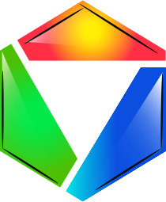

RGB Consortium
Industrial consortium maintaining RGB free software project.
RGB protocol is the first smart contract system made with client-side validation, which works on top of bitcoin & lightning network and doesn't require any softforks.
You can learn more about the technology on https://rgb.tech.
Under Construction